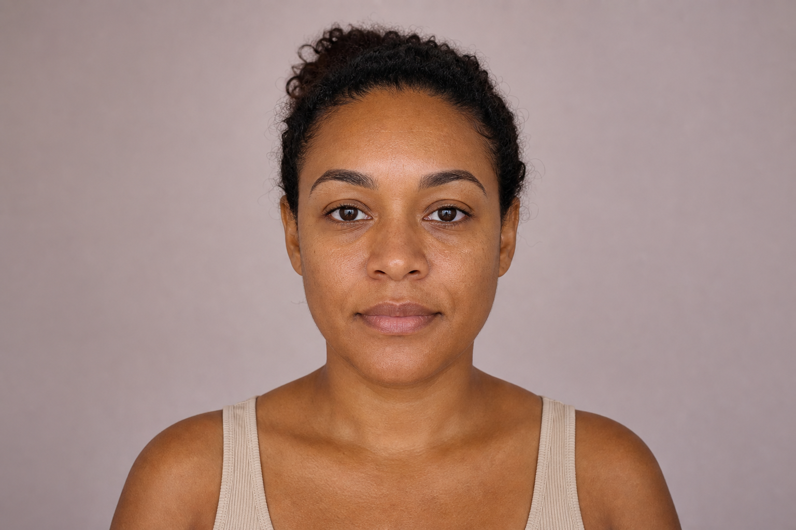

Centralize o rosto e olhe diretamente para a câmera
Etapa 3 de 4 · foto
Uma boa foto evita novas tentativas.
Antes de liberar a câmera, confira quatro cuidados simples. A validação acontece no dispositivo e não consome a análise.
Foto para análise
Preparar · Capturar · Confirmar
1 DE 3

Rosto de frente · distância de um braço
Passo 1 · preparação
Veja antes de fazer.
Exemplos rápidos deixam claro o que o quality gate verifica.
 ✓ LUZ FRONTAL✓ ROSTO INTEIRO✓ SEM FILTROS
✓ LUZ FRONTAL✓ ROSTO INTEIRO✓ SEM FILTROS
Mantenha o aparelho firme